Mira lo que ya vende
Un anuncio que lleva meses prendido es un anuncio que vende. Nadie paga meses por uno que no vende.
Voy a investigar el mercado de mi producto para hacer mejores anuncios. Antes de empezar: 1. Revisa qué tengo instalado y, si falta algo, instálalo tú: Python, Playwright con su navegador, yt-dlp y faster-whisper. 2. Crea una carpeta llamada "investigacion" en mi Escritorio. Todo lo que hagamos queda ahí. 3. Explícame en palabras sencillas qué hiciste. Si algo falla, dime qué pasó y cómo lo arreglas.
Busca y descarga los anuncios activos de mi competencia en la Biblioteca de anuncios de Meta. Producto: [faja colombiana de alta compresión] Palabras de búsqueda: [faja colombiana, faja reductora, faja postparto] Países: [Colombia, México, Estados Unidos, Perú] Hazlo así: 1. Con Playwright, abre facebook.com/ads/library con "Anuncios activos" y "Todos los anuncios", una vez por cada país y cada palabra. Baja la página hasta que no carguen más resultados. 2. De cada anuncio guarda en un Excel (anuncios.xlsx): marca, país, fecha desde la que está activo, días activo, formato (imagen o video), texto, título, botón y enlace de destino. 3. Descarga la imagen o el video de cada anuncio a la carpeta "anuncios", con el número del anuncio como nombre del archivo. 4. Ordena de más días activo a menos. Los que llevan más tiempo prendidos son los que más venden. 5. Quita lo que no sea de mi producto (otros productos, clínicas, ropa que no es faja) y dime cuántos quitaste y por qué. 6. Si Facebook te frena, ve más despacio y vuelve a intentar. No inventes ningún dato. Al final dime: cuántos anuncios, cuántas marcas, cuántos videos y cuántas imágenes quedaron.
Cambia lo que está entre [corchetes] por tu producto y tus países.
Con anuncios.xlsx, comentarios.xlsx y las transcripciones, hazme un informe en HTML fácil de leer, que se abra sin internet: 1. Lo importante en 1 minuto: 5 cifras grandes. 2. Qué ganchos y qué ofertas usan los anuncios que más días llevan activos. 3. Qué les duele, qué desean y qué les frena la compra a las clientas, con sus palabras exactas y cuántas veces se repite cada cosa. 4. El cruce: lo que dicen las clientas y NINGÚN anuncio está diciendo. Ahí está la oportunidad. 5. Top 10 de videos y top 10 de imágenes, con la pieza, los días activo y una línea de por qué vende. Usa solo los datos de los archivos. Si algo no se puede saber, dilo; no lo inventes.
Estos son anuncios activos de mi competencia. Los que llevan más días activos son los que más venden. Sácame: 1) los ganchos que más se repiten, 2) qué dolor o deseo toca cada uno, 3) qué ofrecen y qué botón usan, 4) qué NO está diciendo nadie y yo podría decir.
Escucha lo que duele
Los anuncios dicen qué hace la competencia. Los comentarios dicen qué siente la clienta.
"Se te salen los gorditos de la parte de arriba"
"Pongan una modelo más llenita… toda operada ni se aprecia el cambio"
"Me ahogan, siento que me asfixio"
"El problema es saber cuál talla pedir"
Ahora quiero saber qué les duele a las clientas, con sus propias palabras. 1. Busca en YouTube los 60 videos con más vistas sobre reseñas y experiencias con [faja colombiana]. Búsquedas: [faja colombiana reseña, faja postparto opinión, mi experiencia con faja colombiana, faja que no se enrolla]. 2. Con yt-dlp, descarga hasta 400 comentarios de cada video, SIN descargar el video. Guarda en comentarios.xlsx: el comentario, sus likes y el título del video. 3. Quítales a los comentarios todo dato de personas: nombres, @usuarios, teléfonos, correos y enlaces. 4. Quita los comentarios que no hablen de mi producto. Por ejemplo, en fajas salieron comentarios de cinta para amarrar carga. 5. Dime cuántos comentarios bajaste, cuántos quitaste y cuántos quedaron.
Transcribe en mi computador todos los videos de la carpeta "anuncios" con faster-whisper, en español, sin subir nada a internet.
Después clasifica cada video según cómo arranca en los primeros 3 segundos:
· reseña de una creadora ("me la puse y…")
· abre con el dolor o una pregunta
· antes y después en cámara
· muestra el producto y lo explica
· fábrica u origen
· oferta o forma de pago
· ayuda con la talla
· lo que dicen otras clientas
Dame una tabla con: tipo, cuántos videos hay de ese tipo y cuántos días activos llevan en promedio. Así veo qué se usa más y qué dura más.Estos son comentarios reales de clientas. Sácame lo que les duele, lo que desean y lo que les frena la compra, con sus palabras exactas y cuántas veces se repite cada uno. Después dime qué de esto no está diciendo ningún anuncio de la competencia.
El cruce
Crea con base
Sin base, la IA hace lo mismo para todos. Con base, sale bien a la primera.
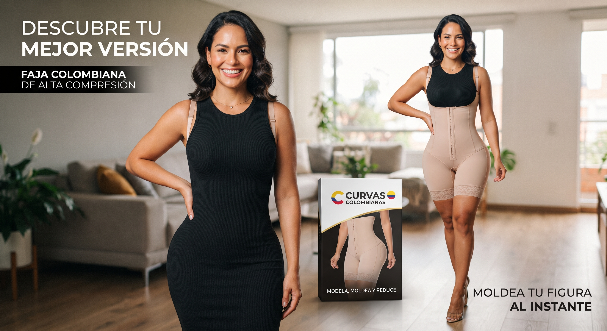
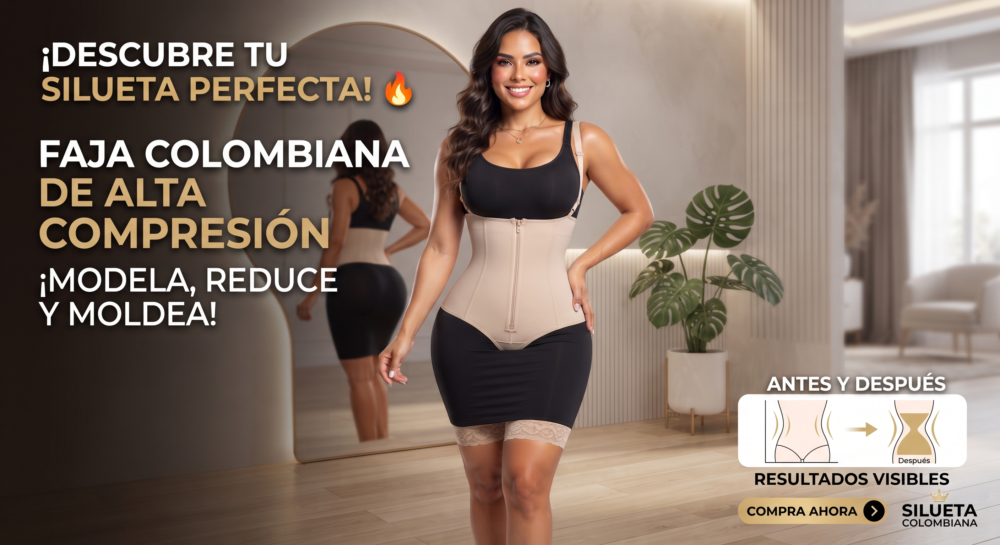
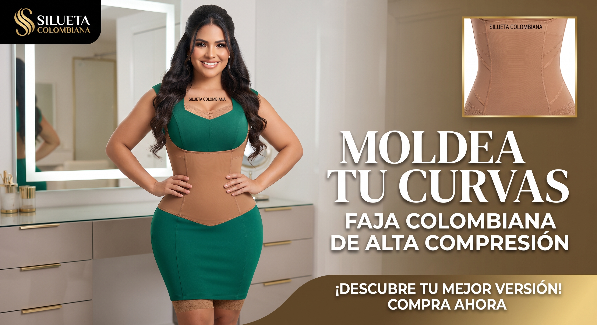
Marcas inventadas, "Moldea tu curvas", horizontal.

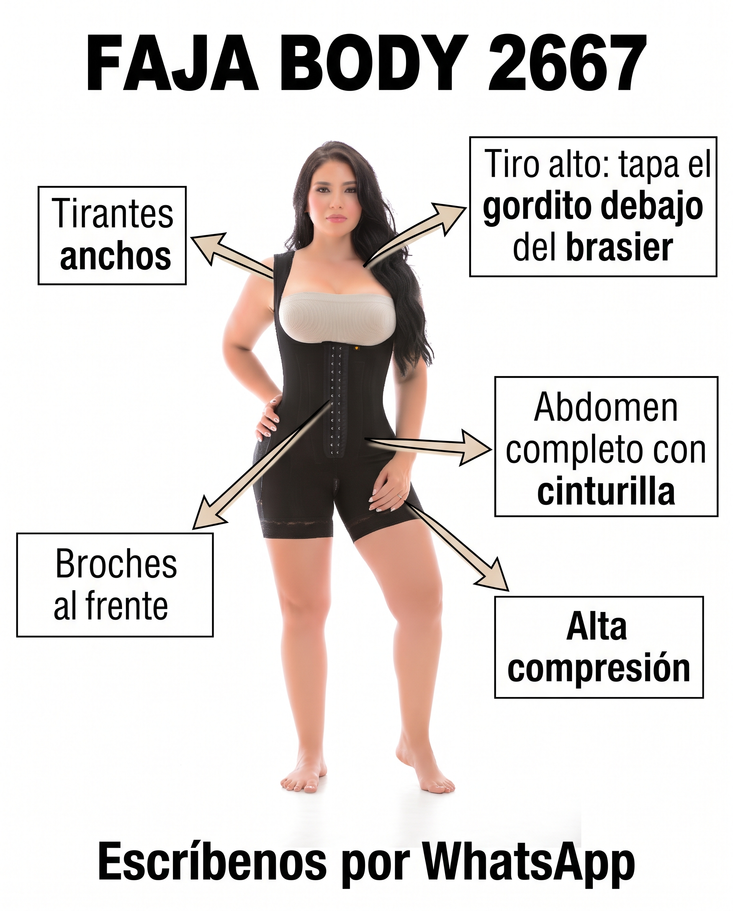


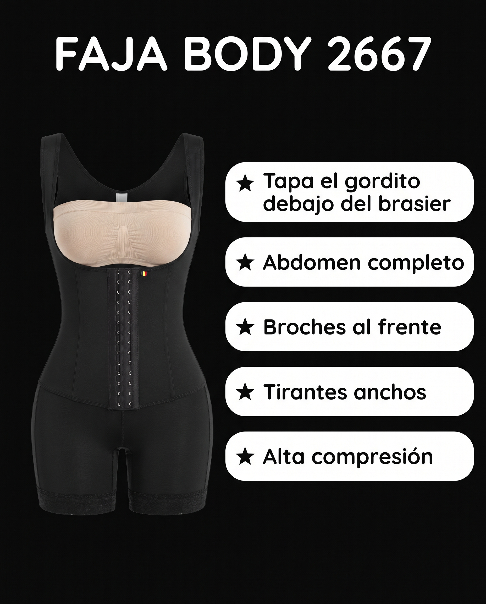


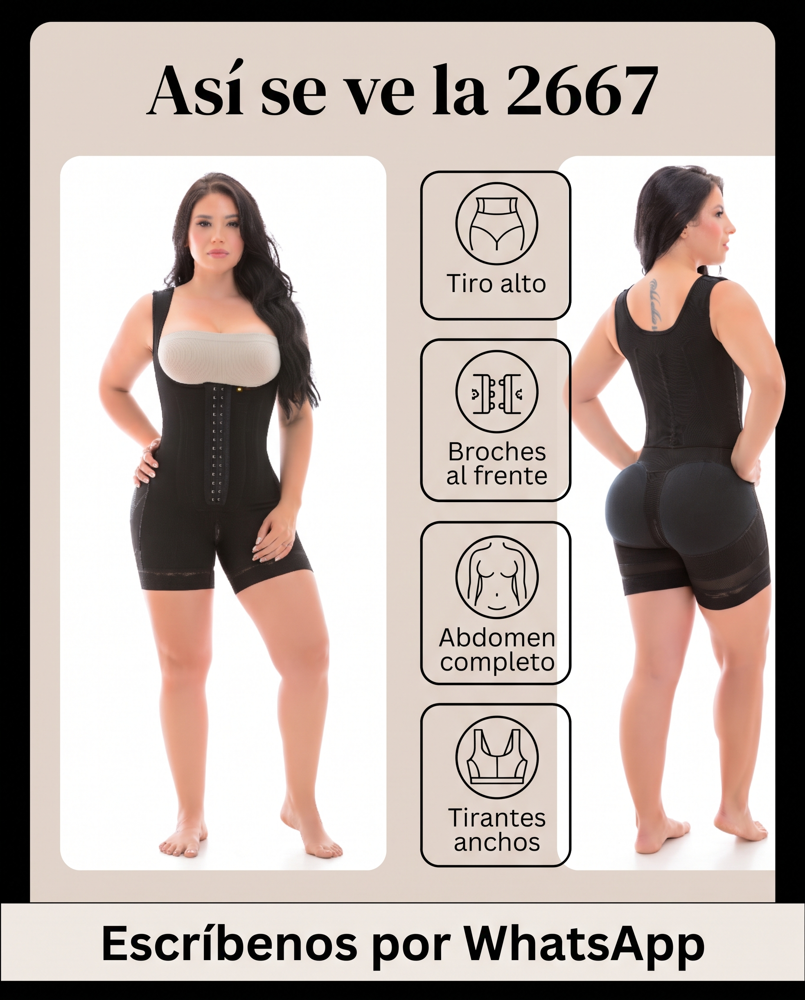
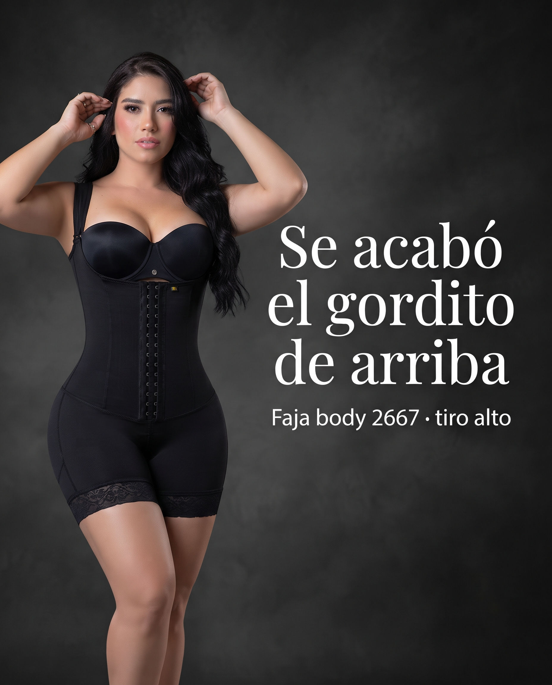
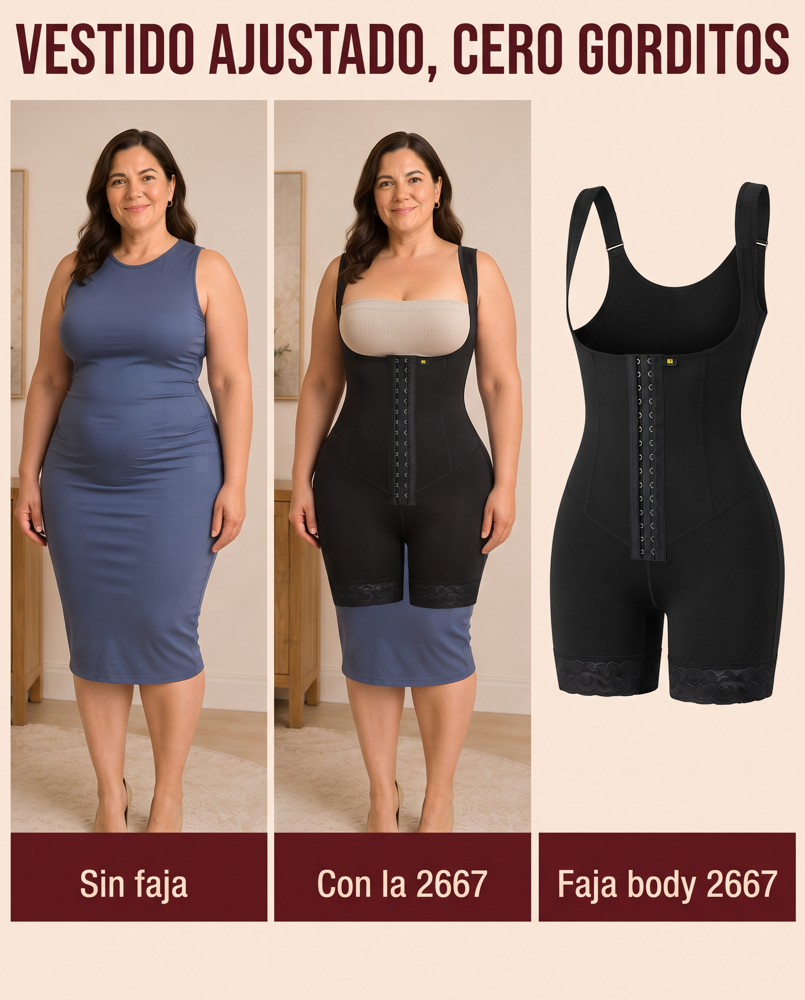
10 anuncios distintos, con la faja real y las frases de las clientas.
Quiero crear 10 anuncios de imagen de mi producto, cada uno con la estructura de uno de los 10 que más venden. Te adjunto la foto real de mi producto. Para cada imagen del top 10: 1. Escríbeme un prompt para Gemini que diga: "copia SOLO la estructura de esta referencia, no su marca, sus colores ni sus personas". 2. Que use mi producto tal cual se ve en la foto. 3. Que use las frases de las clientas que salieron en el informe. 4. Que NO diga "reduce medidas", "quema grasa" ni nada que prometa bajar de peso. 5. Formato vertical 4:5, ortografía perfecta y letra grande. Entrégame los 10 prompts numerados, cada uno con el nombre de la referencia que debo adjuntar en Gemini.
Así lo hago yo: Claude Code abre Gemini en mi Chrome (con mi sesión), adjunta la referencia y la foto del producto, pega cada prompt, espera la imagen y la descarga. Las 10 salen solas, una por una. Si quieres lo mismo, pídele: "Abre Gemini en mi Chrome, con mi sesión iniciada. Para cada uno de los 10 prompts, adjunta su referencia y la foto de mi producto, pega el prompt, espera la imagen y descárgala en la carpeta 'mis-anuncios'. Si una sale con errores de texto, pídele a Gemini que la corrija en la misma conversación, máximo 2 veces."
Te adjunto dos imágenes: 1. Un anuncio de fajas que lleva más de 200 días activo en Facebook. Úsalo SOLO como referencia de estructura: comparación en dos columnas, "otras fajas" a la izquierda con X rojas, y "nuestra faja" a la derecha con chulos verdes, producto grande en cada columna. 2. La foto real de mi producto: faja body negra de tiro alto y alta compresión, referencia 2667. Crea un anuncio nuevo con esa misma estructura para mi producto: - Formato vertical 4:5 para Instagram y Facebook. - Colores: negro, beige y blanco. NO uses el rosado ni el logo de la referencia. No pongas ninguna marca. - Columna izquierda, título "OTRAS FAJAS", con una faja genérica tipo cinturilla y estas 4 X: · Se te sale el gordito de arriba · Solo cubren la cintura · Se enrollan en la espalda · Se marcan con la ropa - Columna derecha, título "FAJA 2667", con mi producto tal cual se ve en la foto (mismo diseño, mismos broches, mismos tirantes) y estos 4 chulos: · Tiro alto: tapa el gordito debajo del brasier · Abdomen completo con cinturilla · Broches al frente · Alta compresión - Abajo, una franja con el texto: "Escríbenos por WhatsApp" - Ortografía en español perfecta. Letra grande, que se lea en el celular.
Me gusta. Deja todo igual, solo corrige dos cosas: 1. El texto de la columna derecha se sale del borde. Déjale margen a los lados. 2. En la columna derecha, muestra la faja 2667 PUESTA en una mujer de cuerpo real, talla grande, con algo de abdomen, no operada. Encuadre desde el cuello hasta las rodillas, sin mostrar la cara. La faja debe verse igual a la de mi foto.
Casi. Todavía hay dos errores:
1. Las frases de la columna derecha siguen tocando el borde derecho de la imagen ("gordito" queda cortado). Haz la letra de esa columna un poco más pequeña y deja el mismo margen que tiene la columna izquierda.
2. La mujer no es talla grande. Quiero un cuerpo talla XL, con abdomen y caderas anchas, como una mamá real de 40 años. El encuadre debe empezar en los hombros: que NO se vea la boca ni la barbilla.
No cambies nada más.
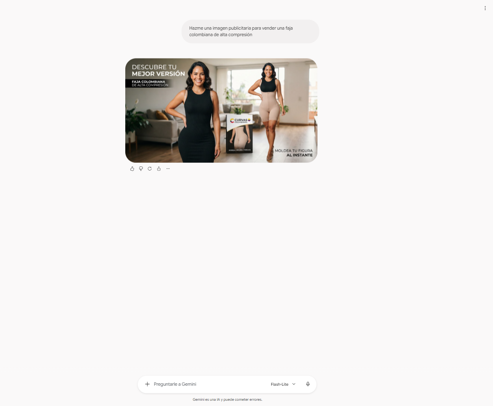
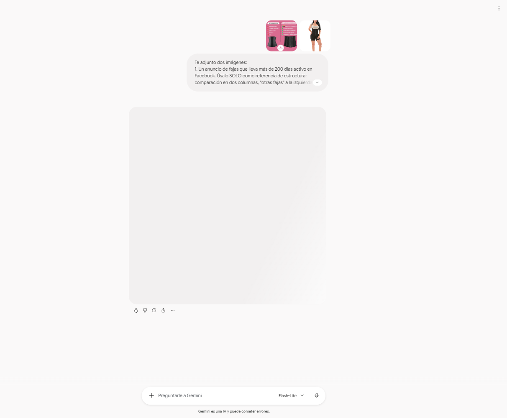
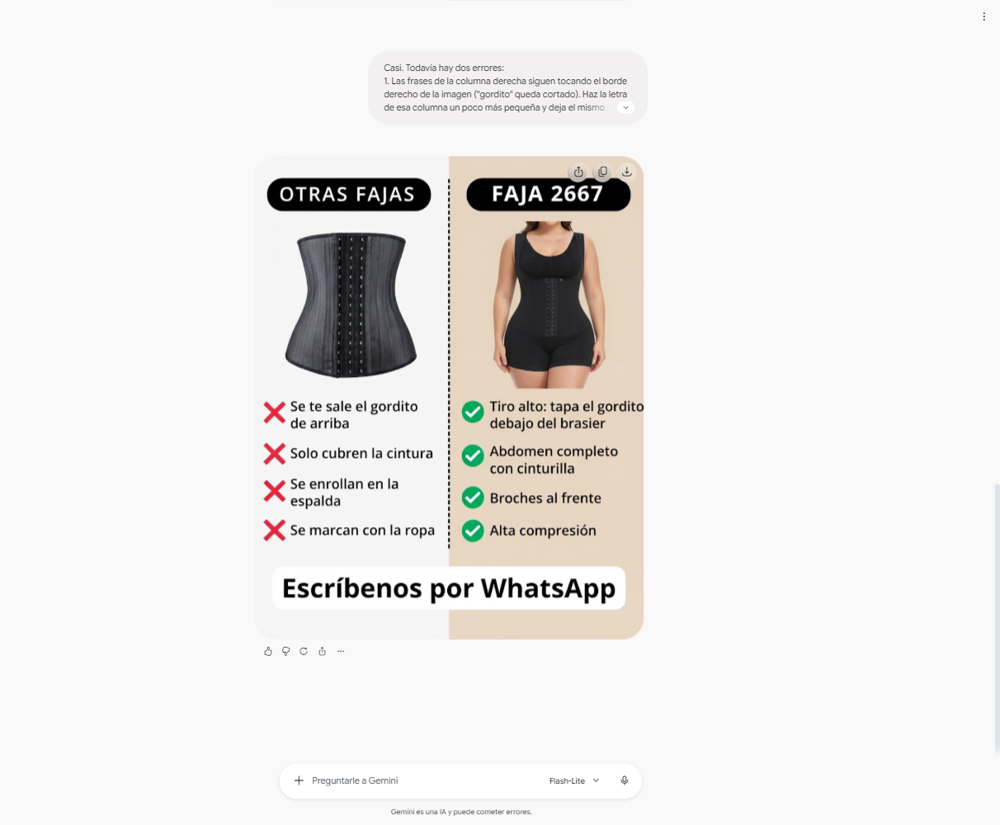
Ver los 10 prompts que usamos
La primera imagen es un anuncio que lleva 250 días activo. Copia su estructura: título grande arriba, el producto en el centro y flechas que señalan cada parte con su beneficio. La segunda imagen es mi producto, la faja body 2667. Título: "FAJA BODY 2667". Flechas con estos textos: · Tiro alto: tapa el gordito debajo del brasier · Broches al frente · Abdomen completo con cinturilla · Tirantes anchos · Alta compresión Abajo: "Escríbenos por WhatsApp". Reglas: formato vertical 4:5 para Instagram y Facebook. Colores: negro, beige y blanco. NO copies el logo, la marca, los colores ni las personas de la referencia: solo la estructura. No pongas ninguna marca. La faja debe verse IGUAL a la de mi foto (body negro, tirantes anchos, busto abierto, broches al frente, hasta medio muslo). Ortografía en español perfecta, letra grande que se lea en el celular. No escribas precios ni descuentos.
La primera imagen es un anuncio que lleva 241 días activo. Copia su estructura: frase grande a un lado, mujer de cuerpo completo al otro lado y un recuadro pequeño con el producto. La segunda imagen es mi producto. Frase: "Moldea tu figura desde que te la pones". Debajo, más pequeño: "Faja body 2667 · tiro alto · alta compresión". La mujer es de cuerpo real, talla L, latina, con la faja puesta. Abajo: "Escríbenos por WhatsApp". Reglas: formato vertical 4:5 para Instagram y Facebook. Colores: negro, beige y blanco. NO copies el logo, la marca, los colores ni las personas de la referencia: solo la estructura. No pongas ninguna marca. La faja debe verse IGUAL a la de mi foto (body negro, tirantes anchos, busto abierto, broches al frente, hasta medio muslo). Ortografía en español perfecta, letra grande que se lea en el celular. No escribas precios ni descuentos.
La primera imagen es un anuncio de producto sobre fondo limpio. Copia ese estilo: el producto solo, grande, bien iluminado, sin persona, fondo beige claro liso. Las otras imágenes son mi producto, la faja body 2667. Muéstrala sola, como foto de catálogo, de frente, sin cuerpo. Un detalle redondo pequeño con los broches de cerca. Texto pequeño abajo: "Faja body 2667 · tiro alto". Reglas: formato vertical 4:5 para Instagram y Facebook. Colores: negro, beige y blanco. NO copies el logo, la marca, los colores ni las personas de la referencia: solo la estructura. No pongas ninguna marca. La faja debe verse IGUAL a la de mi foto (body negro, tirantes anchos, busto abierto, broches al frente, hasta medio muslo). Ortografía en español perfecta, letra grande que se lea en el celular. No escribas precios ni descuentos.
La primera imagen es un anuncio que lleva 161 días activo. Copia su estructura: título grande arriba, producto a la izquierda y a la derecha una lista de beneficios en franjas con estrella. La segunda imagen es mi producto. Título: "FAJA BODY 2667". Lista: ★ Tapa el gordito debajo del brasier ★ Abdomen completo ★ Broches al frente ★ Tirantes anchos ★ Alta compresión IMPORTANTE: no escribas "reduce medidas" ni "quema grasa". Reglas: formato vertical 4:5 para Instagram y Facebook. Colores: negro, beige y blanco. NO copies el logo, la marca, los colores ni las personas de la referencia: solo la estructura. No pongas ninguna marca. La faja debe verse IGUAL a la de mi foto (body negro, tirantes anchos, busto abierto, broches al frente, hasta medio muslo). Ortografía en español perfecta, letra grande que se lea en el celular. No escribas precios ni descuentos.
La primera imagen es un anuncio que lleva 106 días activo: dos fotos tipo selfie en el espejo, una con ropa y otra mostrando la faja, con etiquetas rosadas pequeñas. Copia esa estructura con mi producto (segunda imagen). Una mujer latina de cuerpo real, talla L, se toma selfie con el celular frente al espejo en su cuarto. Foto de arriba: con una camiseta ajustada, etiqueta "Con ropa, ni se nota". Foto de abajo: levanta la camiseta y se ve la faja 2667 puesta, etiqueta "Debajo: la 2667". Que se vea casero, de celular, no de estudio. La cara tapada por el celular. Reglas: formato vertical 4:5 para Instagram y Facebook. Colores: negro, beige y blanco. NO copies el logo, la marca, los colores ni las personas de la referencia: solo la estructura. No pongas ninguna marca. La faja debe verse IGUAL a la de mi foto (body negro, tirantes anchos, busto abierto, broches al frente, hasta medio muslo). Ortografía en español perfecta, letra grande que se lea en el celular. No escribas precios ni descuentos.
La primera imagen es un anuncio que lleva 94 días activo: la misma mujer con la misma ropa, una foto sin faja y otra con faja. Copia esa estructura con mi producto (segunda imagen). Mujer latina de cuerpo real, talla L, con un vestido negro ajustado, en su casa, foto de celular. Izquierda, etiqueta "Sin faja": el vestido marca el gordito debajo del brasier. Derecha, etiqueta "Con la 2667": misma mujer, mismo vestido, la línea se ve lisa. La cara tapada por el celular. Reglas: formato vertical 4:5 para Instagram y Facebook. Colores: negro, beige y blanco. NO copies el logo, la marca, los colores ni las personas de la referencia: solo la estructura. No pongas ninguna marca. La faja debe verse IGUAL a la de mi foto (body negro, tirantes anchos, busto abierto, broches al frente, hasta medio muslo). Ortografía en español perfecta, letra grande que se lea en el celular. No escribas precios ni descuentos.
La primera imagen es un anuncio que lleva 69 días activo: título elegante arriba, dos fotos de la mujer (de frente y de espalda) e íconos con beneficios a los lados. Copia esa estructura con mi producto (las otras imágenes): mujer latina de cuerpo real con la faja 2667 puesta, una foto de frente y otra de espalda. Título: "Así se ve la 2667". Íconos: Tiro alto · Broches al frente · Abdomen completo · Tirantes anchos. Abajo: "Escríbenos por WhatsApp". Reglas: formato vertical 4:5 para Instagram y Facebook. Colores: negro, beige y blanco. NO copies el logo, la marca, los colores ni las personas de la referencia: solo la estructura. No pongas ninguna marca. La faja debe verse IGUAL a la de mi foto (body negro, tirantes anchos, busto abierto, broches al frente, hasta medio muslo). Ortografía en español perfecta, letra grande que se lea en el celular. No escribas precios ni descuentos.
La primera imagen es un anuncio de una marca de fajas: fondo oscuro, mujer con la faja en un lado y una frase grande en letra elegante al otro. Copia esa estructura con mi producto (segunda imagen). Mujer latina de cuerpo real, talla L, con la faja 2667 puesta, fondo gris oscuro de estudio. Frase grande: "Se acabó el gordito de arriba". Debajo, pequeño: "Faja body 2667 · tiro alto". Reglas: formato vertical 4:5 para Instagram y Facebook. Colores: negro, beige y blanco. NO copies el logo, la marca, los colores ni las personas de la referencia: solo la estructura. No pongas ninguna marca. La faja debe verse IGUAL a la de mi foto (body negro, tirantes anchos, busto abierto, broches al frente, hasta medio muslo). Ortografía en español perfecta, letra grande que se lea en el celular. No escribas precios ni descuentos.
La primera imagen es un anuncio con tres paneles: la mujer con un vestido sin faja, la misma mujer con el vestido usando la faja, y la faja sola. Título arriba en letra grande. Copia esa estructura con mi producto (segunda imagen). Mujer latina de cuerpo real, talla L, con vestido azul ajustado. Título: "VESTIDO AJUSTADO, CERO GORDITOS". Etiquetas: "Sin faja", "Con la 2667", "Faja body 2667". Reglas: formato vertical 4:5 para Instagram y Facebook. Colores: negro, beige y blanco. NO copies el logo, la marca, los colores ni las personas de la referencia: solo la estructura. No pongas ninguna marca. La faja debe verse IGUAL a la de mi foto (body negro, tirantes anchos, busto abierto, broches al frente, hasta medio muslo). Ortografía en español perfecta, letra grande que se lea en el celular. No escribas precios ni descuentos.
Crea con base en video
La misma idea: copia la estructura de un video que lleve meses vendiendo, una toma de 8 segundos a la vez.
- AI Pro · $79.000 COP · 1.000 créditos
- AI Ultra 5x · $449.000 COP · 10.000
- AI Ultra 20x · $790.000 COP · 25.000
- Starter · USD 15 · sin Seedance 2.5
- Plus · USD 49 · ~67 videos
- Ultra · USD 129 · ~200 videos
Precios de las páginas oficiales, consultados el 9 de octubre de 2026. Revísalos antes de pagar.
Mira los 3 videos del top 10 que más días llevan activos (están en la carpeta "anuncios"), con su transcripción. Para cada uno escríbeme las tomas de 8 segundos para Google Flow que copien su ESTRUCTURA (cómo arranca, qué muestra, qué dice) con mi producto. Reglas: formato vertical 9:16; la persona es hecha con IA y presenta el producto, NUNCA dice que es clienta ni que lo compró; nada de pellizcar grasa, "reduce medidas" ni "quema grasa". Prompts en inglés y lo que dice la persona en español.
¿Meta lo aprueba?
Antes de poner plata, revisa que Meta no te lo vaya a tumbar.
Revisa todas las imágenes de la carpeta "mis-anuncios" contra las políticas de publicidad de Meta para salud y apariencia (Health and Wellness). Busca la política actual en internet y cítala.
Para cada imagen, dame un semáforo (verde, amarillo, rojo):
1. ¿Promete resultados solo por usar la prenda? ("reduce medidas", "quema grasa", "bajas tallas")
2. ¿Muestra un acercamiento pellizcando grasa?
3. ¿Hace sentir inferior a alguien por su cuerpo?
4. ¿Tiene un antes y después que se pueda leer como bajar de peso?
Para lo amarillo y lo rojo: la frase o la parte exacta que lo causa y cómo cambiarla sin perder la fuerza del anuncio.Adjunto mi anuncio. Revísalo contra las políticas de Meta para salud y apariencia (Health and Wellness) y dame un semáforo: 1) ¿promete resultados solo por usar la prenda? 2) ¿pellizca grasa? 3) ¿hace sentir inferior a alguien? 4) ¿tiene un antes y después que parezca bajar de peso? Para lo amarillo y rojo, dime qué cambiar.
Deja que Meta escoja
La pauta solo reparte lo que tú le das. Lo que decide todo es el creativo.
Más de 3 y muchos se quedan sin presupuesto: ese trabajo se pierde.
Meta decide a quién le muestra cuál.